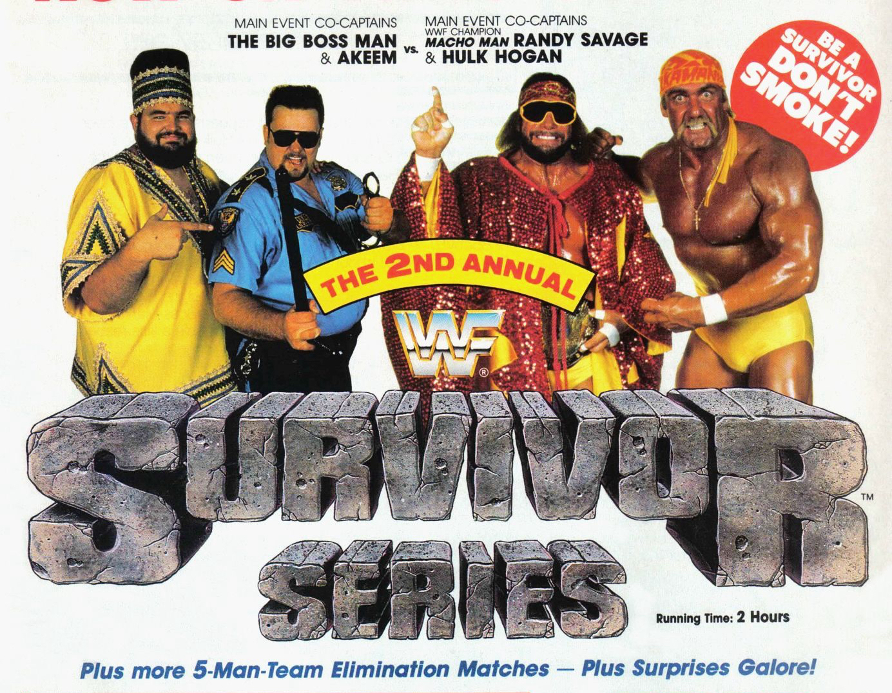

Survivor Series 1988
When Five on Five Meant Fifteen Guys at Ringside

Ah, Survivor Series 1988—the event where you could witness five-man teams awkwardly try to coexist for more than five minutes without someone betraying someone else. This was WWF in the late ‘80s, where the drama was bigger than the hair, and the matches were so overstuffed with wrestlers, you’d be forgiven for thinking you’d tuned into a royal rumble by mistake. Grab your spandex and mullet, because we’re diving into the madness.
The Build-Up: If We’re Friends Now, We Won’t Be By the End
The 1988 Survivor Series was all about alliances. Alliances between men who had spent the previous months body-slamming each other and were now expected to suddenly get along for… reasons. Spoiler alert: they didn’t. At least not for long. But, hey, it’s Thanksgiving—what better way to celebrate than watching 40 guys hit each other in the face for your entertainment?
1. Team Ultimate Warrior: The Most Electric Group of Misfits Ever Assembled
Leading this team was The Ultimate Warrior, a man who sprinted to the ring like he was being chased by a horde of angry turkeys. The Warrior was joined by Brutus “The Barber” Beefcake (yes, the guy whose gimmick was cutting hair), Sam Houston (because every Survivor Series team needs a guy no one remembers), The Blue Blazer (Owen Hart in a superhero suit, RIP), and Jim Brunzell (one half of the Killer Bees, now a Bee-less hero).
Across the ring stood The Honky Tonk Man, the Elvis impersonator with a guitar and a haircut that defied the laws of physics, Ron Bass (because nothing says intimidating like a cowboy gimmick), Danny Davis (who was more famous for being a crooked referee than an actual wrestler), Greg “The Hammer” Valentine (known for his slow, plodding matches), and the always-angry Bad News Brown.
This match was everything you could expect from the late ‘80s. Honky Tonk’s hair held up like a champ, and Bad News Brown, not interested in any team-building exercises, peaced out halfway through the match like he had better things to do. The Ultimate Warrior went full berserker mode, eliminating everyone like he was clearing a buffet, leaving Brutus Beefcake free to give everyone an unwanted trim backstage. The Warrior, of course, won, and sprinted back to the locker room faster than anyone could question the sanity of his war paint.
2. The Tag Team Mega-Collision: Too Many Guys, Not Enough Referees
This match was an absolute tag team frenzy. We had the Powers of Pain (Warlord and Barbarian, two guys who looked like they got lost on their way to a Conan audition), the Rockers (Shawn Michaels and Marty Jannetty, the latter not yet famous for being thrown through a barber shop window), the British Bulldogs (Davey Boy Smith and Dynamite Kid, the toughest Brits this side of a pub fight), the Hart Foundation (Bret Hart and Jim Neidhart, half-speeding toward legendary status), and the Young Stallions (Paul Roma and Jim Powers—yes, they existed). What a hero’s lineup.
They were up against the villains: Demolition (Ax and Smash, whose face paint had more character development than some wrestlers), the Brain Busters (Arn Anderson and Tully Blanchard, the technical wizards who were there to actually wrestle), The Bolsheviks (Nikolai Volkoff and Boris Zhukov, token Cold War-era bad guys), the Fabulous Rougeaus (two Canadian brothers pretending to love America for some reason), and the Conquistadors (Uno and Dos, the most creatively named luchadors ever).
In a match with this many bodies, things got messy. Mr. Fuji, who was managing Demolition at the time, decided to pull a soap opera-worthy turn by ditching his team and siding with the Powers of Pain mid-match, because why not? After approximately 70 minutes of tagging in and out, the Powers of Pain and their new buddy Fuji stood tall. Demolition probably went backstage to question their life choices, while everyone else was too busy trying to figure out how they were supposed to keep track of so many eliminations.
3. Team André: The Bigger They Are, the Slower They Move
Team captain André the Giant, who by this point had all the mobility of a parked car, led the charge. Backing him up were Rick Rude (the most ab-obsessed man in wrestling), Dino Bravo (the master of “meh”), “Mr. Perfect” Curt Hennig (who was perfect), and Harley Race (the kind of guy who looked like he smoked cigars while bodyslamming people).
They were up against the ragtag crew of Hacksaw Jim Duggan (the king of the 2x4), Jake “The Snake” Roberts (a man who believed in snake therapy), Scott Casey (random cowboy #2), Ken Patera (Olympic strongman turned pro wrestler), and Tito Santana (a reliable workhorse, still cashing in on the success of his flying forearm).
André did his usual thing: stand in the middle of the ring, look menacing, and let everyone else do the heavy lifting. Jake Roberts brought his trusty snake, but this time, the snake wasn’t enough to scare André, because André was too busy contemplating his next nap. After plenty of chaos, it was Mr. Perfect who pulled out the win for his team, probably because he was the only one whose bones weren’t creaking by the end of the match. Duggan was likely still waving his 2x4, regardless of the outcome.
4. The Mega Powers vs. The Twin Towers: Can You Feel the Ego?
Here it is, folks—the main event, starring two of the biggest egos in wrestling history. On one side, you had the Mega Powers, a tag team consisting of Hulk Hogan (whose flexing could power a small city) and “Macho Man” Randy Savage (who cut promos like he drank three pots of coffee before the show). Joining them were Hercules (who had a chain, because why not?), Koko B. Ware (accompanied by his parrot Frankie, who was possibly the smartest member of the team), and Hillbilly Jim (yes, a real character who wore overalls to wrestle).
Their opponents? The fearsome Twin Towers: Akeem (the former One Man Gang, now repackaged as a “Jive Soul Bro” for… reasons) and The Big Boss Man (who was basically a walking “bad cop” trope). They were joined by Ted DiBiase (the Million Dollar Man, who may or may not have paid his teammates to like him), King Haku (the guy who could kick your head off), and The Red Rooster (yes, a guy pretending to be a rooster).
The match itself? Pure ‘80s insanity. Hogan and Savage kept things together long enough to win, but the real drama was between them, with Miss Elizabeth stuck in the middle. Hogan hugged Elizabeth one too many times, and you could practically see the steam coming out of Savage’s ears. This wasn’t just a win—it was the start of the end for the Mega Powers. The seeds were planted, and soon enough, WrestleMania V would come calling, where friendship and loyalty would be thrown out the window in favor of bicep poses and elbow drops.
The Aftermath: Alliances, Betrayals, and Nostalgia in Spandex
Survivor Series 1988 was more than just a collection of chaotic matches—it was a masterclass in building storylines that would simmer for months. Alliances formed that night didn’t just fade; they exploded spectacularly. The biggest, of course, was the beginning of the end for the Mega Powers. Hulk Hogan’s habit of stealing Miss Elizabeth’s attention wasn’t just Savage’s problem—it was everyone’s problem. Soon enough, their bromance would crumble into a full-blown rivalry, all thanks to one too many inappropriate side-hugs. And while Hogan’s ego was indestructible, Savage’s paranoia was more than enough to make WrestleMania V appointment viewing.
Then there was Mr. Fuji’s betrayal of Demolition, a classic bit of heel manager backstabbing that would leave Ax and Smash with trust issues for years. Fuji’s sudden affection for the Powers of Pain didn’t make a lot of sense, but it set the stage for a big showdown down the line—because nothing says grudge match quite like betrayal in a tag team elimination match that featured more mullets than actual pins.
And what about poor André the Giant? By this point, his in-ring days were nearing their end, but he still loomed large over the roster, both literally and figuratively. Jake “The Snake” Roberts may have survived, but you just know André was planning a snake-related revenge at some point. Sure, he wasn’t as mobile as he once was, but when you’re 7-foot-4, you don’t need to be—you just glare and wait for people to come to you.
The Legacy: Why We Keep Coming Back to 1988
What makes Survivor Series 1988 so memorable, aside from the mullets, neon tights, and excessive use of hairspray? It’s that perfect mix of over-the-top characters and the most dramatic, soap opera-esque storytelling you could ask for. The action wasn’t always crisp, but the personalities more than made up for it. These were superheroes in a world of villains, where betrayal was inevitable, and victory usually meant an elbow drop or three.
Sure, wrestling has changed a lot since then. But there’s something about these early events that makes you smile. It was simpler, more over-the-top, and honestly? That’s what made it magical. No matter how many times you watch Hogan flex, Savage scream, or André just stand there looking like a mountain with legs, you still feel the joy of a bygone era. An era where the lines between good and evil were drawn with thick, black Sharpie—and usually a folding chair.
It’s wrestling like this that reminds us why we fell in love with the sport in the first place. Sure, the business has evolved, but sometimes you just want to go back to when things were simpler. When all you needed was a good guy, a bad guy, and 30 minutes of controlled chaos. And no event delivered that better than Survivor Series 1988.
We may never get another event quite like it, but that’s okay. Because even today, when you go back and rewatch it, you can still feel the magic. And for wrestling fans, that’s all that matters.